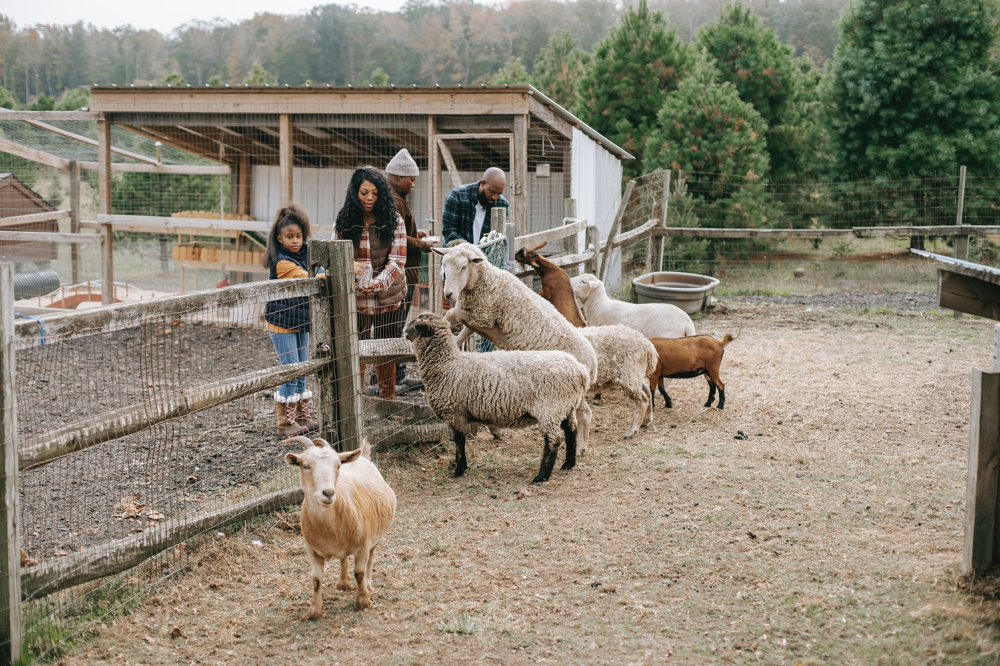

In different seasons, we have various fruits. You can pick up strawberries in April, take bllueberries in June,
and grapes and apples takeing in June, and in September, you can pick up oranges, and I October, pumkins are here wating for you

In the animal area, you can feed the animals and even touch them, the animals here are very friendsly. We have cows,
sheep, and even a flock. It will be fun for kids and parents to enjoy time together.
Share the feeling and pictures that you are having fruits with your companies. You can post it on our public instgrams and show to others. find your favourite
parts of the farm and enjoy it.